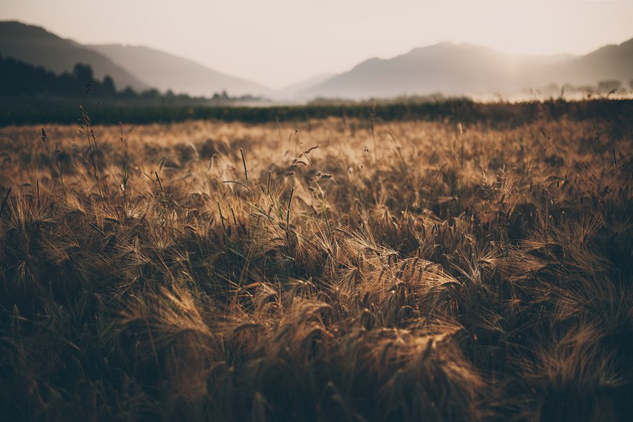
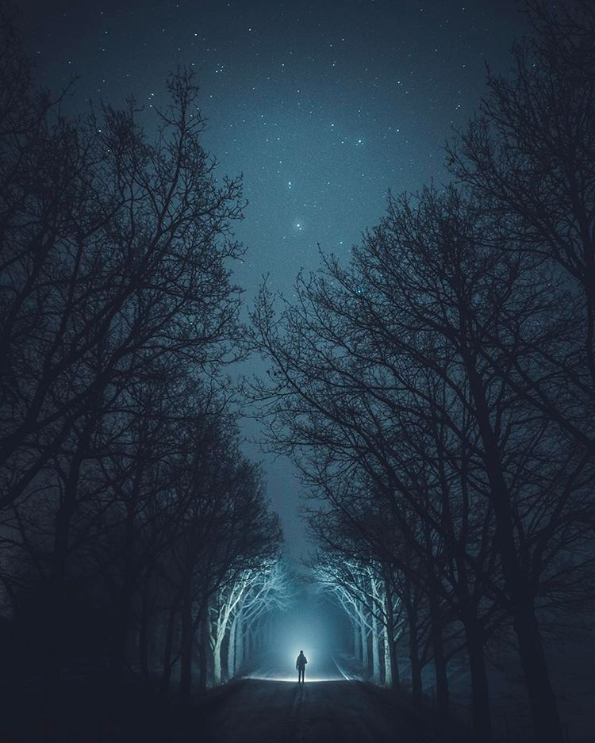

Are you ready to love literature ?

Present your attention...

I love my husband so much!

I think, there is nothing special in me. I was born in a small russian town, I grown up in lovely family (best family in the world, actually), I become a cemical engeneer (not a good decision) and got married (still can't believe he doesn't joking). All my life I wanted to be a writer, don't know why, just felt that it's mine. Now I got lost in reality. But I know, the right words still inside of my heart. Most of my poems in Russian, but I hope, one day I will write in English too. Thanks to my husband, now I have a place to share my life with you.
Волков бояться - в лес не ходить, не бежать,
Не дышать зелёною хвоей,
Не касаться губами воды родниковой,
Не пробовать терпкой смолы на острие ножа.
Волков бояться - себя муровать под бетоном, картоном,
Мусором жалкого оправдания,
Отдавать свою душу городу на заклание,
Не оставив и крошки за пазухой куртки простого фасона.
Что волки тебе? Они были и будут свободными,
В их плошках-глазах луна плещется,
Вот-вот выльется, или мерещится?
Они видят Вселенную в небе, а ты лишь глядишь себе под ноги.
Ты не годен для них и как завтрак, аперитив,
Не соперник, не жертва, тем более, не победитель.
Не в их жёстких лапах таится твоя погибель!
Волчата напьются росы, тебе - не дано, даже шею к земле склонив.
Так стоит ли? Страхом кормить свою смерть, стоит ли?
Если так манит переплетенье ветвей,
Если граница стоит, но ты хочешь знать, что же за ней,
Что тебе волки?
Не они ведь её построили.
Несбывшееся сидит на твоих коленях,
Пахнет грозой и ночными огнями улицы.
Несбывшееся остановит проклятое время -
И даст мне минуту надежды на то, что сбудется.
Несбывшееся дышит ровно, глаза прикрывши
Видит сны, за которые мы заплатили сторицей.
Я дотронусь рукой и мурчанье его услышу,
И сердце мое на мгновение остановится.
Несбывшееся не проснется, а нам - в дорогу.
Нам нужно идти, оторвать от себя надежду,
Ты сбрасываешь его - вцепляется в ногу,
Я пропитываю слезами свою одежду.
Несбывшееся падает на скамейку,
В огромных глазах ледяная тоска поднимается.
Ты за руку прочь уводишь меня по аллейке,
Я бросаю свое Несбывшееся
Не оглядываясь.
Шелест ветра уносит в тихую гавань,
Где нет строгой формы и нет белых саванов,
Где нет боли в сердце и нет в руках холода,
Где можно свободно вдохнуть грудью полной.
В той гавани море любимых улыбок,
Искренних слов и прощенных ошибок.
То море залечит усталое тело
И каждому страху положит пределы.
В соленых волнах клокочет надежда -
Впитается в душу, как влага в одежду,
Веру вернет, и душа успокоится.
Веру в людей - не в святую троицу.
И пусть мои чувства находят нелепыми -
Пусть для них перестала я быть человеком,
Пусть одна я в полете, а не с родными,
Пусть руки заботливые стали крыльями.
Я хочу в твоем шелесте, ветер, увязнуть,
Мне давно назад путь знакомый заказан,
Я за что-то наказана. Из жизни вырвана,
Но тем проще взлететь над пустыми равнинами.
Жди меня, море. На счастье ль, на горе -
Я прилечу и растворюсь в твоей соли.
Новый шанс провален и пропущен,
Судьба устала нам благоволить,
Мы не идем за голосом зовущим,
Мы у стены стоим и продолжаем выть
О нашей безнадежной острой боли,
Что рвет в клочки измученную грудь,
Мы говорим о смерти нашей воли,
А сами продолжаем к смерти льнуть.
Рыдаем мы о том, как жизни смысл
Покинул нас, оставил в темноте,
А сами от огня бежим как крысы,
А сами приковали дух к земле.
Мы ждем, когда придут за нами,
Поставят на ноги, от пыли отряхнут.
Но горизонт пустой и будет пуст годами,
Они не вспомнят. Не заметят. Не спасут.
Послушай, нам пора очнуться, ввысь подняться!
Ведь время не растянется для нас.
Я знаю, просто - страхом укрываться,
Так просто лени и сомнениям поддаться,
Но каждому ведь есть за что сражаться!
Иди. Пора вернуть сюжет в рассказ.
Я - дерево, сожгите мои ветви!
Я подарю вам свет, я вас спасу теплом,
Не вешайте на мне намыленные петли,
Я - жизнь! Я не хочу быть вашим палачом.
Сломайте, разведите в сумерках костры,
Танцуйте в очертаниях оранжевого круга,
Я вам даю добро, так будьте вы добры,
Будьте в этих сумерках терпимее друг к другу!
Я - дерево, от листьев до корней
Принадлежу лишь вам, и это добровольно,
Я вас л ю б л ю, от этого сильней
Горит мое нутро, и это очень больно.
Когда звезда взойдет, утихнет ваша песня,
Рассыплюсь по земле усталою золой...
Вы ведь потом не вспомните костер до поднебесья?
Была я деревом, а стану
Тишиной.